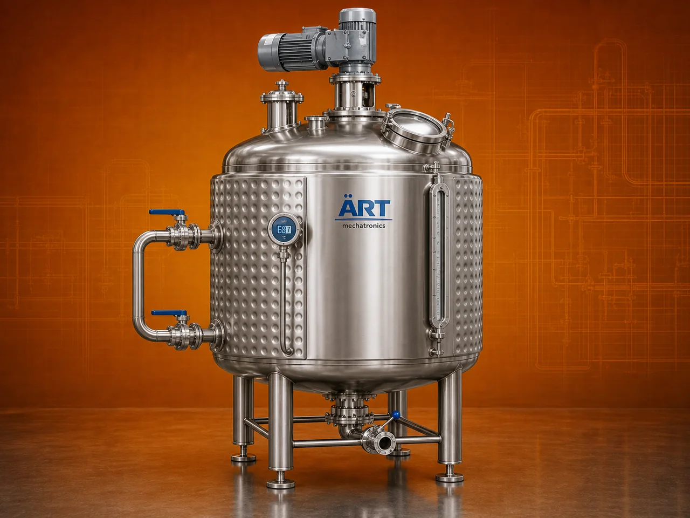

Jacketed Tank Machine (Industrial Jacketed Vessel for Heating, Cooling & Mixing Applications)
A Jacketed Tank, also known as a Jacketed Vessel or Industrial Mixing Tank, is a versatile process equipment designed for heating, cooling, and mixing liquid or semi-solid materials under controlled conditions.

About the Jacketed Tank
The tank is constructed with a double-wall (jacketed) structure, where a heating or cooling medium such as steam, thermal oil, hot water, or chilled water circulates in the outer jacket, allowing uniform temperature control without direct contact with the product.
Jacketed tanks are widely used in industries such as food processing, pharmaceuticals, chemicals, cosmetics, dairy, and nutraceuticals, where precise temperature control, hygienic processing, and consistent product quality are essential.
ART Mechatronics offers high-performance jacketed tanks, engineered for efficient heat transfer, durability, and reliable industrial operation.
One machine, many names
Buyers search for this equipment under many terms — we manufacture all of them:
Working Principle of Jacketed Tank
Types of Jacketed Tanks
Industries Using Jacketed Tank
🍃 Food Processing Industry
- Sauces, syrups, liquid foods
🥛 Dairy Industry
- Milk processing
💊 Pharmaceutical Industry
- Liquid medicines
⚗️ Chemical Industry
- Chemical mixing and reactions
💄 Cosmetic Industry
- Creams and lotions
🌿 Nutraceutical Industry
- Health products
Features & Advantages
- Uniform heating and cooling
- Precise temperature control
- Hygienic and food-grade design
- Suitable for multiple applications
- Optional mixing system
- Energy-efficient heat transfer
- Durable and robust construction
Technical Highlights
- Capacity: Custom (liters to large industrial scale)
- Heating Medium: Steam / Thermal oil / Hot water
- Cooling Medium: Chilled water
- Construction: Stainless Steel / Mild Steel
- Mixing: Optional agitator
- Control System: Manual / PLC-based
Turnkey Jacketed Tank Solutions
ART Mechatronics offers:
- Complete tank design and customization
- Heating and cooling system integration
- Mixing and automation solutions
- Installation & commissioning
- After-sales service & AMC
Why Choose Art Mechatronics
- Expertise in process equipment manufacturing
- Customized solutions for multiple industries
- High-performance and hygienic machines
- Energy-efficient and durable designs
- Proven industrial performance
Applications
- Food Processing Plants
- Dairy Processing Units
- Pharmaceutical Manufacturing Units
- Chemical Processing Plants
- Cosmetic Production Units
Industries that use the Jacketed Tank
Related Heating & Drying machines
Get pricing & specs for the Jacketed Tank
Share the product, target capacity, current process and plant location. These details help our engineers discuss the right machine or line configuration.
One partner, from design to start-up
ART Mechatronics designs, manufactures, installs and commissions your Jacketed Tank solution with regional presence in India, UAE and Thailand.